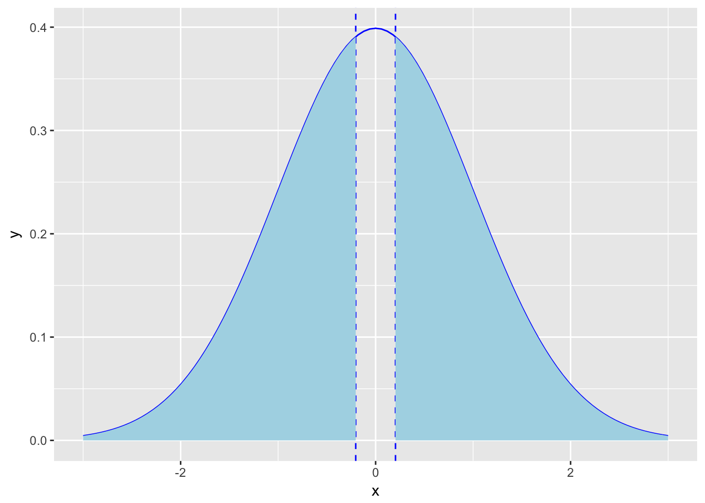

Розділ 6 Тестування гіпотез
Коли дослідники мають очікування щодо параметрів генеральної сукупності – говорять про статистичну гіпотезу. Зазвичай, гіпотеза формулюється як твердження що параметр генеральної сукупності має певне значення або знаходиться в певному інтервалі. Це твердження базується на попередніх дослідженнях та теорії. На основі інформації, отриманої з вибірки оцінюють, чи має сенс (справедливе) це твердження чи ні. Це те, що ми називаємо тест на значущість. Тест на значущість, як і побудова довірчих інтервалів, є методом вивідної статистики. Ми пробуємо оцінити параметри генеральної сукупності на основі вибірки.
Тест на значущість базується на двох гіпотезах: це нульова та альтернативна гіпотези. Нульова гіпотеза позначається як H0, альтернативна як На. Нульова гіпотеза стверджує, що параметр генеральної сукупності набирає конекретного значення. Ця гіпотеза може бути відхилена, якщо дані вибірки кажуть що це дуже нетипові очікування. Альтернативна гіпотеза стверджує, що параметр, який досліджується має альтернативне значення чи набір значень. Нульова та альтернативна гіпотези завжди взаємовиключні (mutually exclusive). Коли ви робите тест на значимість, ви вважаєте, що нульова гіпотеза правдива поки дані вибірки не дадуть достатньо сильні аргументи, що це не так. Це схоже на суд присяжних. Прокурор пробує переконати суддів, що підсудний винен. Підсудний не має доводити свою невинність і вважається невинним, поки прокурор не доведе інакше.
Як формулюються гіпотези? Нехай дослідження показало, що пульс студентів університету становить 70 ударів за хвилину: Стандартне значення становить 72 удари. Дослідник хоче визначити чи відрізняються результати вибірки від загальних результатів
\(H_A: \mu \neq 72\) \(H_0: \mu = 72\)
Тестування гіпотез для середнього значення
9 листопада 1965 року в енергосистемі США сталася аварія. 30 мільйонів людей протягом 13 годин перебували без світла. Через 9 місяців (10 серпня 1966) в NY Times опубліковане дослідження, яке стверджувало що значно зросла народжуваність
table will be here witrh parameteres
Ми хочемо дізнатись, чи відрізняється це значення від звичайного рівня народжуваності в Нью Йорку (середня кількість новонароджених 430 на добу)
Нульова гіпотеза: Відключення електроенергії у листопаді 1965 року впливу на кількість новонароджених не має, тобто таке ж саме як і в інші місяці.
\(H_0 = 430\) (звична кількість новонароджених)
Альтернативна гіпотеза: Відключення електроенергії у листопаді 1965 має вплив на кількість новонароджених
\(H_A \neq 430\)
Це двостороння альтернатива, що означає що рівень народжуваності відрізняється. Можемо також розглядати односторонню альтернативу, наприклад \(H_A > 430\)
Тестова статистика вимірює різницю між даними отриманої вибірки та нульовою гіпотезою.
Фактично тестова статистика відповідає на питання: ”Яка відстань у середньоквадратичних відхиленнях між середнім значенням отриманої вибірки та середнім значенням згідно нульової гіпотези”
Для рівня народжуваності в Нью Йорку середнє значення вибірки становить 432.21, а середнє значення згідно нульової гіпотези 430.
Щоб обрахувати тестову статистику нам потрібно знати середньоквадратичне відхилення для вибірки.
тестова статистика для середнього значення вибірки
Середнє значення вибірки має середньоквадратичне відхилення \(\frac{\sigma}{\sqrt{n}}\), наша тестова статистика буде обчислюватись за формулою:
\[ Z = \frac{\bar X - \mu_0}{\frac{\sigma}{\sqrt{n}}}\]
Z – кількість середньоквадратичних відхилень між середнім значенням вибірки та середнього значення згідно нульової гіпотези
Для обрахування тестової статистика Z потрібно знати середьноквадратичне відхилення генеральної сукупності \(\sigma\)
Ми вже знаємо, що в цьому випадку можна використовувати t-розподіл. Тобто потрібно обрахувати
\[ t = \frac{\bar X - \mu_0}{\frac{s}{\sqrt{n}}}\]
Для нашого прикладу середнє значення вибірки 432.21, середнє значення згідно нульової гіпотези середнє значення 430, середньоквадратичне відхилення вибірки 40.48. Розмір вибірки: 14.
Тестова статистика: \[ t = \frac{\bar X - \mu_0}{\frac{s}{\sqrt{n}}} = \frac{432.21 - 430}{\frac{40.48}{\sqrt{14}}} = 0.204\]
Тобто, середнє значення отриманої вибірки знаходиться на відстані 0.204 середньоквадратичних відхилень від середньоквадратичного значення нульової гіпотези.
Чи ця різниця є статистично значимою? Чи можливо ми отримали це значення випадково?
значення ймовірності (p-value)
За припущення, що нульова гіпотеза правдива, p-value відповідає на питання “яка ймовірність отримати значення більш екстремальне ніж наще спостережуване середнє значення”
Чим менше p-value тим більш нереалістичною є нульова гіпотеза Для нашого прикладу t =0.204.
За припущення що середнє значення нашої генеральної сукупності 430, яка ймовірність отримати вибірку, з t статистикою 0.204 або більш екстремальне?
library(ggplot2)
ggplot(data.frame(x = c(-3,3)), aes(x)) +
geom_vline(xintercept = 0.204, linetype=2, colour="blue") +
geom_vline(xintercept = -0.204, linetype=2, colour="blue") +
stat_function(fun = dnorm, colour="blue") +
geom_area(stat = "function", fun = dnorm, fill = "lightblue", xlim = c(0.204, 3)) +
geom_area(stat = "function", fun = dnorm, fill = "lightblue", xlim = c(-3, -0.204))
p.val <- 2*pt(0.204, df=13, lower.tail = FALSE)
p.val = 0.841статистична значущість
Ми порівнюємо отримане p-value з фіксованим значенням, яке є вирішальним наскільки ми маємо доказів, щоб відкинути нульову гіпотезу.
Це вирішальне значення має назву рівень значущості та позначаєтся \(\alpha\)
Загально прийнятим \(\alpha\) рівнем є \(\alpha =0.05\). Це означає, що докази які ми отримали проти нульової гіпотези настільки сильні, що можуть бути отримані в результаті випадкового збігу не більше ніж в 5% (якщо нульова гіпотеза справедлива).
Якщо p-value менше ніж \(\alpha\) говорять, що різниця статистично значима для рівня \(\alpha\)
Для обчислення значення p-value будемо використовувати той факт t-розподіл
\[ t = \frac{\bar X - \mu_0}{\frac{s}{\sqrt{n}}} = \frac{432.21 - 430}{\frac{40.48}{\sqrt{14}}} = 0.204\]
\(H_0: \mu = 430\)
\(H_A: \mu \neq 430\)
\(\alpha = 0.05\)
df = n - 1 = 13
Критичний регіон
x_vector <- c(452, 470, 431, 448, 467, 377, 344, 449, 440, 457, 471, 463, 405, 377)
n = 14
alpha = 0.05
qt(1 - alpha/2, df = n - 1) ## [1] 2.160369# 2.160369
t.test(x_vector, alternative = "two.sided", mu=430, conf.level = 0.95)##
## One Sample t-test
##
## data: x_vector
## t = 0.20464, df = 13, p-value = 0.841
## alternative hypothesis: true mean is not equal to 430
## 95 percent confidence interval:
## 408.8384 455.5901
## sample estimates:
## mean of x
## 432.2143t.test(x_vector, alternative = "greater", mu=430, conf.level = 0.95)##
## One Sample t-test
##
## data: x_vector
## t = 0.20464, df = 13, p-value = 0.4205
## alternative hypothesis: true mean is greater than 430
## 95 percent confidence interval:
## 413.0523 Inf
## sample estimates:
## mean of x
## 432.2143# x_vectort = 0.20464, df = 13, p-value = 0.4205p_value = 0.841 > \(/alpha\)
трактування результатів
Для кількості новонароджених у Нью Йорку p-значення = 0.814, що не дозволяє відкинути нульову гіпотезу для рівня значущості \(\alpha\)=0.05.
Іншими словами, можна сказати що різниця між нульовою гіпотезою та даними вибірки не є статистично значущою.
Тобто наші дані не підтверджують гіпотезу, що рівень народжуваності у перші два тижні серпня 1966 відрізняється від звичного. Тобто, відсутність електроенергії не мало впливу на рівень народжуваності.
тестування гіпотез для пропорцій
Чи відрізняється відсоток новонароджених хлопчиків від 50%? У вибірці 200 новонароджених, з них 96 хлопчики.
\(H_0: p = 0.5\)
\(H_A: p \neq 0.5\)
Рівень довіри \(\alpha = 0.05\)
Тестова статистика
\[ z = \frac{\bar p - p}{\sqrt{\frac{p(1-p)}{n}}}\]
\(\bar p = \frac{96}{200} = 0.48\), p = 0.5, n = 200
\(z = \frac{\bar p - p}{\sqrt{\frac{p(1-p)}{n}}} = \frac{0.48 - 0.5}{\sqrt{\frac{0.5(1-0.5)}{200}}} = -0.566\)
ggplot(data.frame(x = c(-3,3)), aes(x)) +
geom_vline(xintercept = 0.566, linetype=2, colour="blue") +
geom_vline(xintercept = -0.566, linetype=2, colour="blue") +
stat_function(fun = dnorm, colour="blue") +
geom_area(stat = "function", fun = dnorm, fill = "lightblue", xlim = c(0.566, 3)) +
geom_area(stat = "function", fun = dnorm, fill = "lightblue", xlim = c(-3, -0.566))
p.val = 2*pnorm(-0.566)
p.val = 0.571трактування результатів
Для кількості новонароджених p-значення = 0.571, що не дозволяє відкинути нульову гіпотезу для рівня значущості \(\alpha = 0.05\) Іншими словами, можна сказати що різниця між нульовою гіпотезою та даними вибірки не є статистично значущою. Тобто наші дані не підтверджують гіпотезу, що відсоток хлопчиків серед новонароджених відрізняється від 50%.